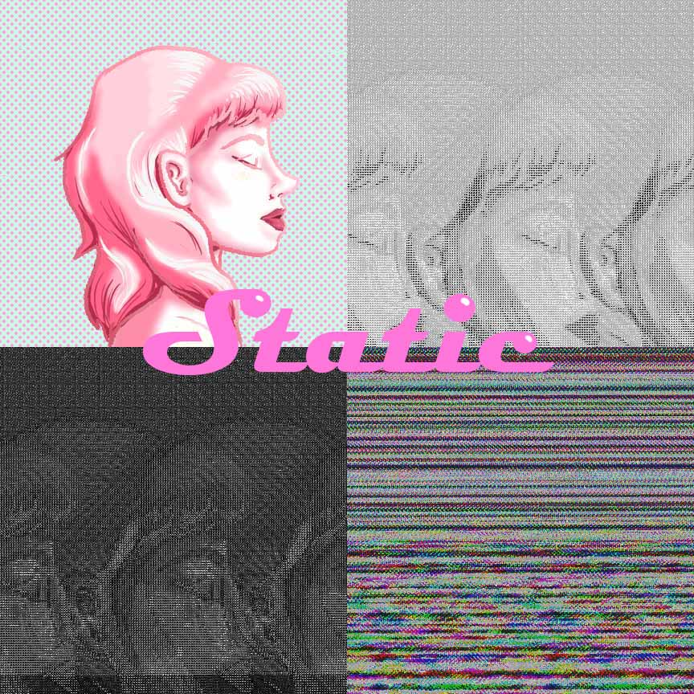

by Sosofarsosofie
"Static" is my personal project. Its my attempt in combining my art style with datamoshing. I used Audacity and Photoshop to create the artwork itself.
"Static" illustrates the temporary nature of the image of beauty. One day the idea of beauty will change and the old trend will fade away. In turn, people using that trend seem to fade as well.
